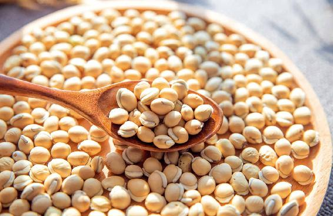
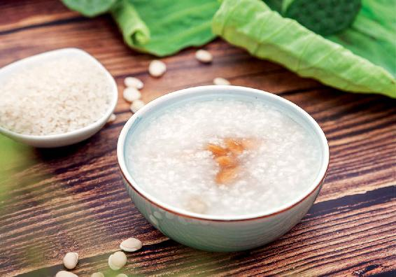
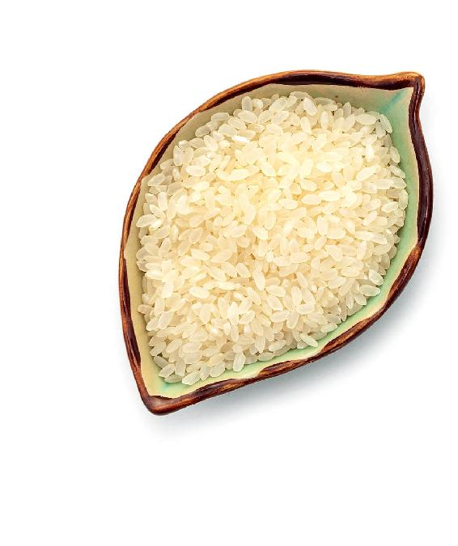
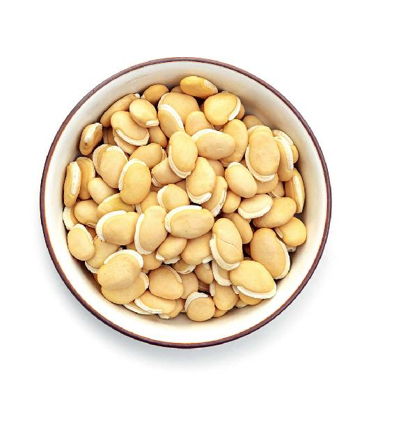
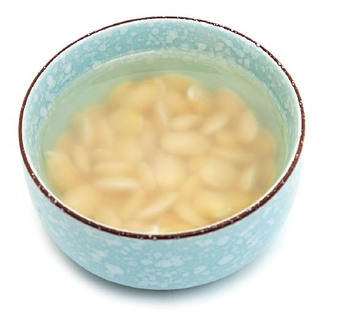
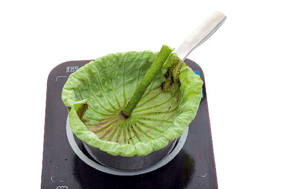

每年的农历七月十五是中元节，这个节与正月十五元宵节正好隔了半年。中元节的名称也是由此而来。
正月十五月圆，叫作上元节；七月十五月圆，就叫中元节；到了十月十五，就是下元节了。
上元节吃元宵，中元节也有它代表性的食物——面人。
中元节的面人有很多样式：相公、小孩、燕子、蛇……
古人认为：有燕子在你的屋檐下做窝，有小孩和蛇象征着多子多福、子孙绵延，同时中元节阴气很重，有一个相公在这镇住它……这就是一家合乐了。
当然这是中元节在民间文化上的寓意。中元节吃面食也有养生方面的考虑。
农历七月，进入收获的季节。在古代，新收获的五谷，天子要先尝，而天子会请祖先先尝。这是中国人孝道的体现。
在农历五月收获的麦子，当时是不用来磨面的。新麦是“发物”，存到入秋来吃才好。
到了秋天，这些麦子就可以拿出来磨面了，做成面食，让大家吃个痛快。
麦为心之谷，吃麦子可以滋养心阴。特别是麦子的麸皮，能预防高血糖，还能营养神经，让人心神安定。医圣张仲景的千古名方甘麦大枣汤，就是利用了麦子的这个功效。
这个时节，即使您不会做复杂的面人，也可以适当吃一些面食，最好是用带麸皮的全麦粉来做。
为什么人们把中元节称为“鬼节”，把农历七月称为“鬼月”呢？其实没有那么可怕，这里面有文化和养生的内涵。
如果您了解了中元节的内涵，就更能明白，农历七月的养生，为什么与“阴”有关系，与“水”有关系，为什么这个月湿气重的人更容易产生换季病。
有些朋友以为中元节源于佛教的盂兰盆节。其实，早在佛教传入中国之前，我们的祖先就已经设立了每年七月祭祀鬼神的礼俗。
中国传统的干支纪年法，用十个天干配十二个地支来记录年月日。按地支排序，农历正月是“寅”月，数到了农历七月，就是“申”月。
我们来看一下甲骨文的“申”字——（商代青铜器铭文上的“申”字），它是“神“的本字。“申”其实就是代表“神”——鬼神。
《说文解字》讲“七月，阴气成。”因为农历七月进入初秋，天地之间的阴气渐长。
古人认为鬼神是属“阴”的，所以七月被称为“鬼月”，并在这个月祭祀鬼神，这就是七月十五中元节的起源。
祭祀鬼神就是祭祀祖先。中元节传承数千年不衰，体现了中国人对“孝道”的重视。
“七月，阴气成。”阴气生长的时候，气虚、阳虚的人也会感觉身体疲乏、容易生病，所以这个时节黄芪不能断，有湿气的人还可以吃点白扁豆。
中元节和清明节祭祖，有什么不同呢？
清明是要去扫墓的，中元节则是在家里祭拜。
中元节与清明节，也有一点相同：就是都要去水边。
清明节，其实是寒食、上巳和清明三节合一。上巳节就要去水边。这是为了用佩兰等香草来洗去冬日积垢和陈疾，祓除不祥，祈求福祉。
中元节一样要去水边，也就是古人讲究的放河灯。
农历七月是“申月”。“申”属阴，阴就是水。
我们要注意“申”月的“水”。因为入秋后，换季出现的毛病多半跟水有关系。
天气开始转凉，原来蒸腾在上的湿气慢慢往下走。而由于“一夏无病三分虚”——夏季天热，人不停出汗，食欲又下降，所以基本上到了入秋后，哪怕是平时健康的人，也多少有点虚，对湿气就更没有抵抗力了。
加上这个时候天气还有点闷热，湿气尤重，所以有的朋友会出现便秘腹泻交替、肠胃型感冒、皮肤过敏等毛病。
湿气如果伤到肠胃，可以喝荷叶扁豆粥。
夏秋时，很多人的湿气在脾胃。还有些人在病后脾胃会有湿气，消化功能变差，想补又补不进去。
脾胃有湿气的人，伸出舌头来，舌苔上厚厚的一层，口气也比较明显。
脾胃湿气重的人，喝粥时可以加一味白扁豆。
它健脾祛湿的效果很好，专门祛除脾胃的湿气。
请注意，这个白扁豆可不是平时吃的新鲜扁豆角，而是干的白色的豆子，在它的侧面有个像白色腰带一样凸起的半月形的东西。它既是一味中药，也是一种食物，在药店和市场都可以买得到它。
挑选白扁豆，比挑选赤小豆更要注意。传统入药的白扁豆，由于量少，没见过的人比较多，容易买错。

市场上的白扁豆分三种：
“进口白扁豆”：这个不是传统入药的白扁豆。很多人去买白扁豆都不小心买到了这种，因为它看起来很有卖相，又大又白，还特别便宜。它是一种外来品种，产量高，现在市场上包括药市上都比较多。鉴别点：比传统白扁豆更大、更扁平、更白。
“云南扁豆”：这个是白扁豆。但是要注意，产于云南的不一定都是云南扁豆，有大量进口白扁豆混杂为云南扁豆，还有引进外来品种种植的。老品种的白扁豆应该比较圆，部分豆子上有黑色的斑点。
“川扁豆”：道地的产地在四川，是入药最好的白扁豆。正宗的老品种，除了形状比较圆，部分豆子上有黑色的斑点之外，还有一个显著的特征：豆腰上凸起的半月形有一条黑线，像一弯眉毛，称为“娥眉豆”，药效最佳。
传统药用白扁豆“黑眉”川扁豆
有一弯黑色的“娥眉”
道地产地：四川
外来品种白扁豆
产量高，形状扁平，发白。
杂交白扁豆
产量高，无黑眉。
要注意，现在还有一些是引进品种与传统品种杂交出来的白扁豆，这些外形上就不是太好区别了。

荷叶扁豆粥


原料：荷叶、白扁豆、大米。

做法：
1.提前一个晚上，用淘米水把白扁豆泡上，因为白扁豆是很难煮熟的。把泡好的白扁豆和大米一起冷水下 锅，煮成粥状。

2.在粥快熟的时候打开锅盖，把一张 洗干净的新鲜荷叶扣在粥面，煮上 5分钟。也可以在粥快熬好的时候 放入干荷叶熬。
这道粥最好是在早上喝，因为荷叶升举清阳，白扁豆补益中气。早上喝可让自己的脾胃阳气足，增强消化功能，让人保持头脑清醒。
前面讲过在初秋出现便溏（大便不成形）的现象，要先祛湿气。不要追求在初秋的时候让它马上消失。因为初秋是身体排湿气的时候，要通过大便和小便来进行，如果我们用一些方法，追求让脾虚便溏的现象马上消失的效果，是不利于身体排出湿气的。
如果脾胃湿气重而且伴有便溏，可以喝荷叶扁豆粥。如果便溏现象持续，后期可以多放一些白扁豆。
另外要注意，有湿气的人，一年中的其他季节一般以调理寒湿为主，但在初秋，在祛湿的同时还要兼顾一点祛热，因为经过了一个夏天，人体内很容易蓄积一些湿热。这样到了深秋、仲冬，您再来吃一些暖胃的东西，就更不容易上火。
湿热重的人，可以用荷叶配上冬瓜皮一起煮水喝。
读者评论：手指甲上的月牙长出来了
zhxiao ：喝了一段时间荷叶扁豆粥，手指甲上的月牙长出来了，谢谢老师。
允斌解惑：秋冬季还能喝荷叶扁豆粥
Mina ：秋冬季还能喝荷叶扁豆粥吗？
允斌：可以喝的。